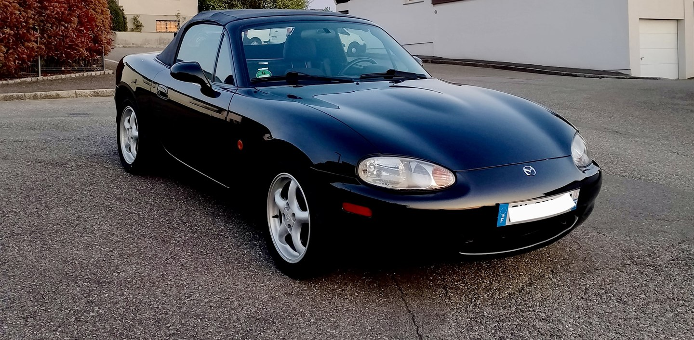
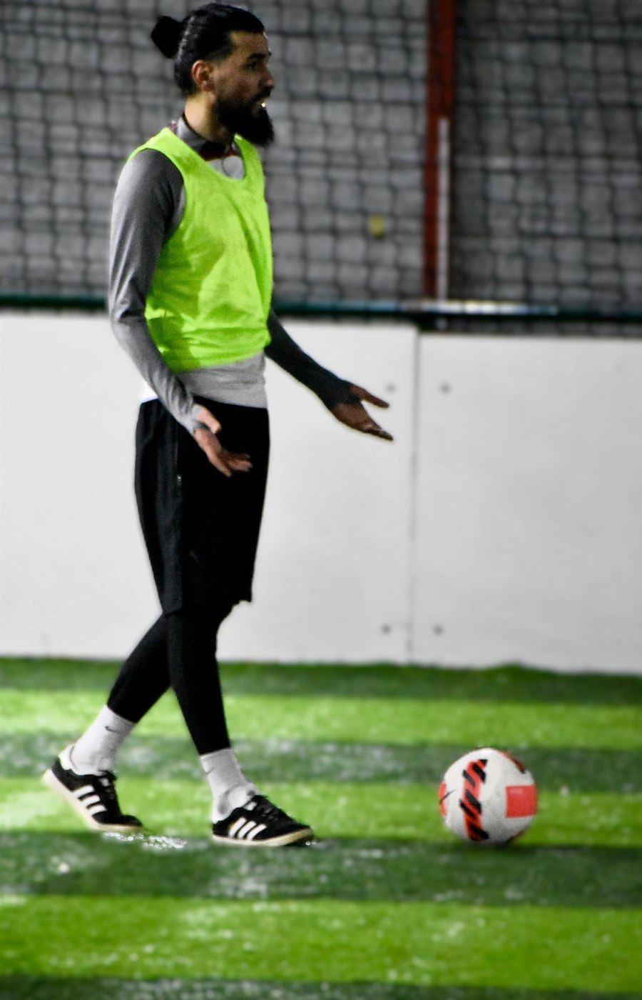
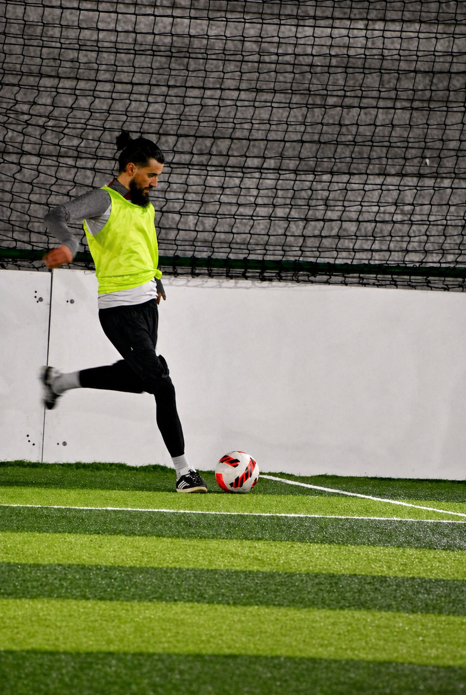

Rénovation d'une Mazda MX-5 MK2
Achat d'une voiture pour un projet long terme, établissement des besoins du chantier, chiffrage et rénovation en autonomie : intérieur, extérieur, corrosion et mécanique.
Des projets menés en autonomie, souvent par curiosité au départ, puis avec l'envie de comprendre concrètement comment les choses fonctionnent.

Achat d'une voiture pour un projet long terme, établissement des besoins du chantier, chiffrage et rénovation en autonomie : intérieur, extérieur, corrosion et mécanique.

Choix des composants, assemblage, installation propre et optimisation d'une configuration adaptée à mes usages quotidiens.

Utilisation d'un adaptateur Wi-Fi USB AWUS1900 802.11ac, couplé à Kali Linux, pour effectuer quelques tests en environnement contrôlé et légal.


Je suis en charge de la photographie du club de foot local et j'aide à l'organisation, avec un Nikon D7200.